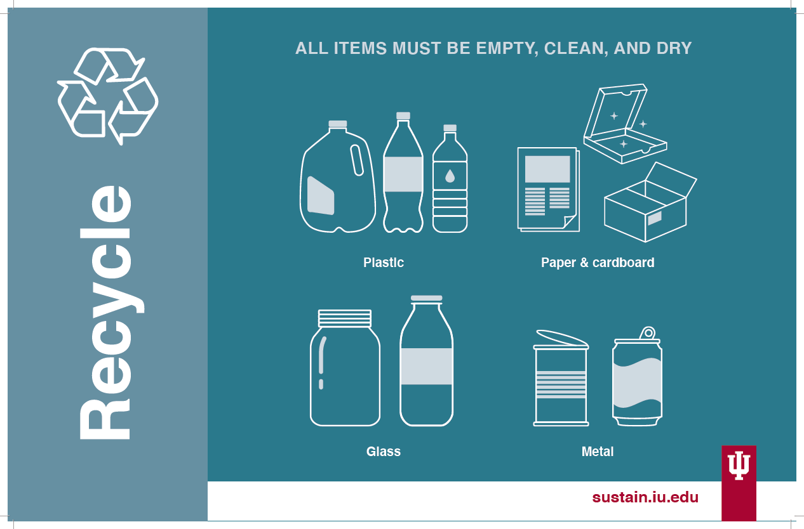
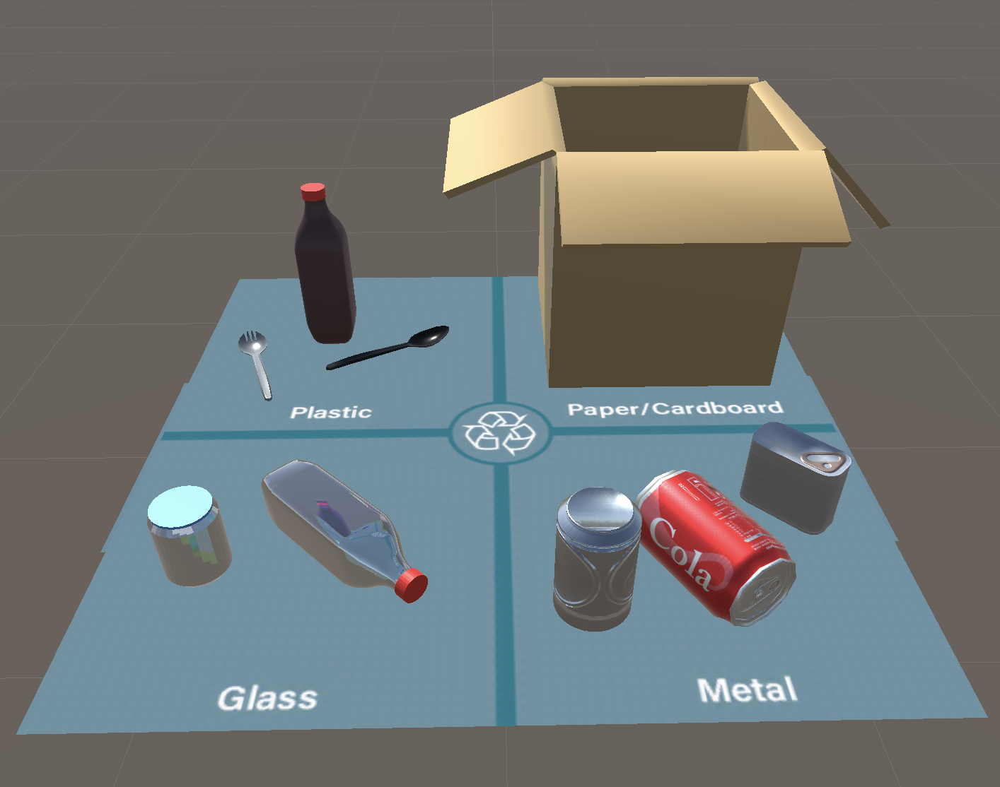
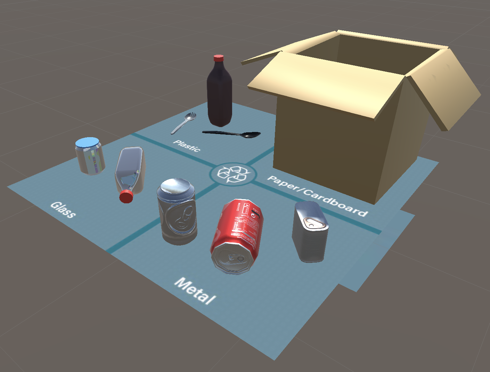
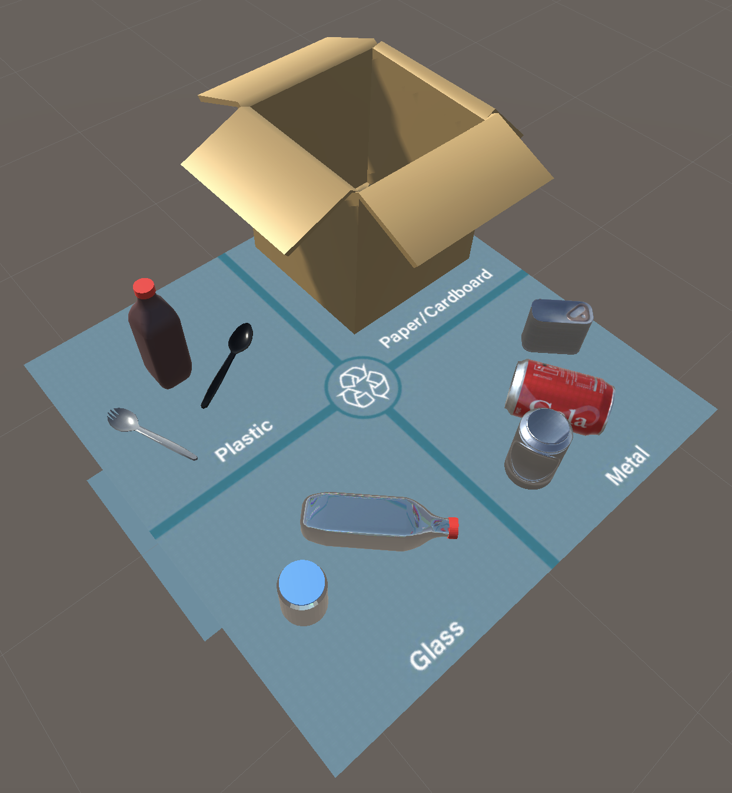

Final Project
Purpose
For my final project, I revisited the concept of Augmented Reality using Unity and Vuforia. I wanted to explore the concept of recycling at IU because sustainability is something I have been interested in for the past few years. I have noticed that Sustain IU has posters above some of the trash cans on campus that differentiates trash bins into three categories: recycle, landfill, and compost. For this project, I wanted to add an AR element to these posters so that the user could open the Unity app on their phone and scan an element of the poster that would then lead them to see 3D models of what items can go in the specific bin.
Image Target
When it came to deciding what to use as an image target for this project, I knew that I wanted to make it closely related to the posters that Sustain IU already uses. Each poster shows the various items that can be put into that category. I decided to focus on the recycling poster to begin with since it is what I was initially most interested in when starting this project. When I began constructing the scene in Unity, I started with the full Sustain IU poster as my image target. However, after working with it a few times and exporting my first IOS app iteration through Xcode, I realized that I would prefer a smaller image target. I had two reasons behind this decision. First, since the Sustain IU poster already breaks down the recycle section into four different categories, I wanted to minimize the amount of repetitive content in my project. Second, I wanted to use a smaller image target so that the app could be more easily implemented with trash cans of different sizes around campus. So, I ended up settling on just having a portion of the poster as my image target.
Unity Scene
I created my scene in Unity by importing assets from various places. I was able to find some free assets on the Unity Asset Store that fit nicely into my project such as the plastic cutlery, cardboard box, and spam can. Some of the other components I created using Blender such as the bottle, jar, and soda can. For the glass objects in my scene, I used a glass material from the Unity Assets Store to achieve the transparent glass look. All objects in the scene rest atop a plane that is divided into four categories to display what can be placed into the recycling bin. I created this image first using Adobe Illustrator, implementing the colors on the Sustain IU poster for consistency. I then made the image a material on Unity to add it to the plane in the scene.
 Project Links
Demo Video: Link
Explanation Video: Link
Unity File: Link
Bottle Blender File: Link
Jar Blender File: Link
Soda Can Blender File: Link
Artist Statement
My work consists of a variety of mediums extending over both physical and digital spaces. When it comes to creating in a digital environment, I enjoy applying my creativity and technical skill towards UX Design. When designing user interfaces, my main goal is to create designs that are both functional and appealing to the eye. To achieve this, I maintain consistency throughout the whole process in the color scheme and typography. Pivoting from a digital space to traditional physical artwork, I explore different textures through traditional weaving techniques such as crocheting and punch needling. When creating such pieces, I use a variety of colors to make elements of the piece pop and provoke feelings in those viewing my work. Through the use of these different colors, I attempt to create illusions to not only encourage emotion in my audience, but to convey a larger meaning through the manipulation of commonly held ideas. Moving away from color, I enjoy using linework combined with black and white themes to create illusions, faces, and figures. The movement of the lines in the piece as they form different features conveys a calming simplicity meant to push the viewer into pondering the larger meaning of each work.